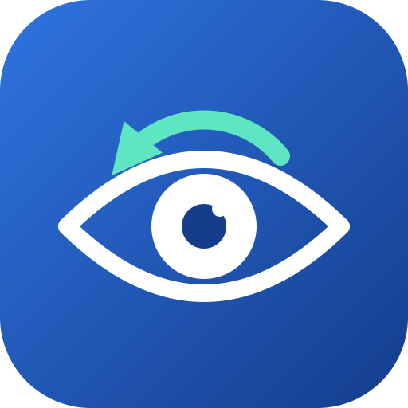

Um olho visto de frente, como o examinador o vê, com a seta de rotação da fase rápida torsional — o sinal que identifica a VPPB do canal posterior. A cor da seta é a mesma do componente torsional nos gráficos da app; o azul é a cor de ação da interface.